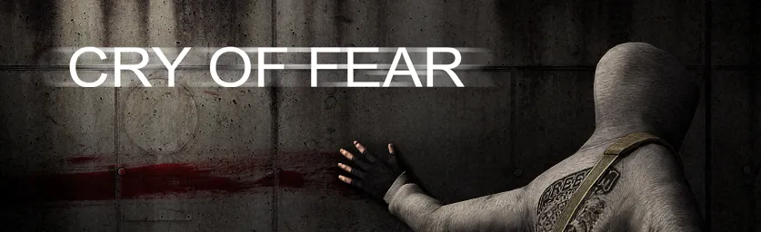
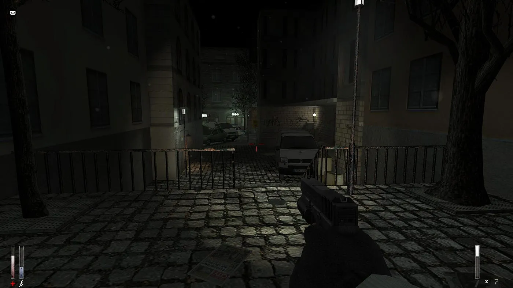
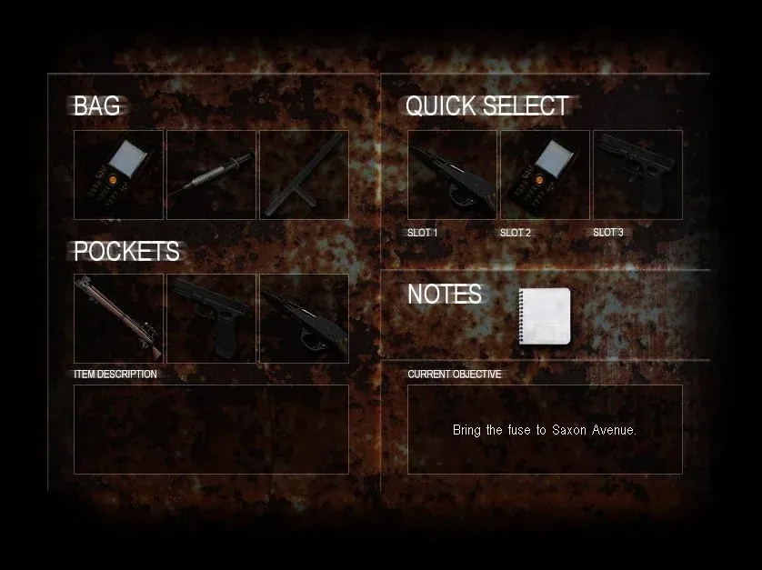
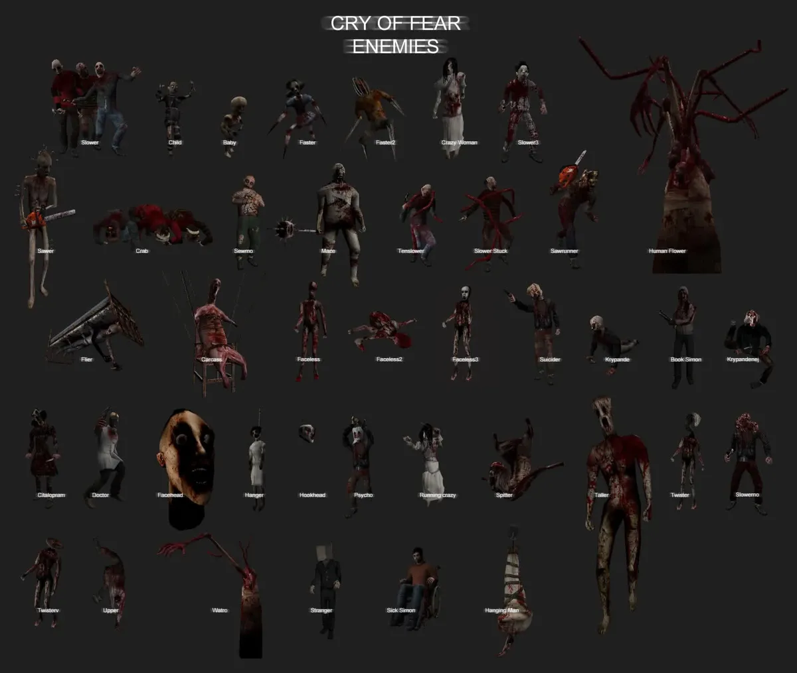
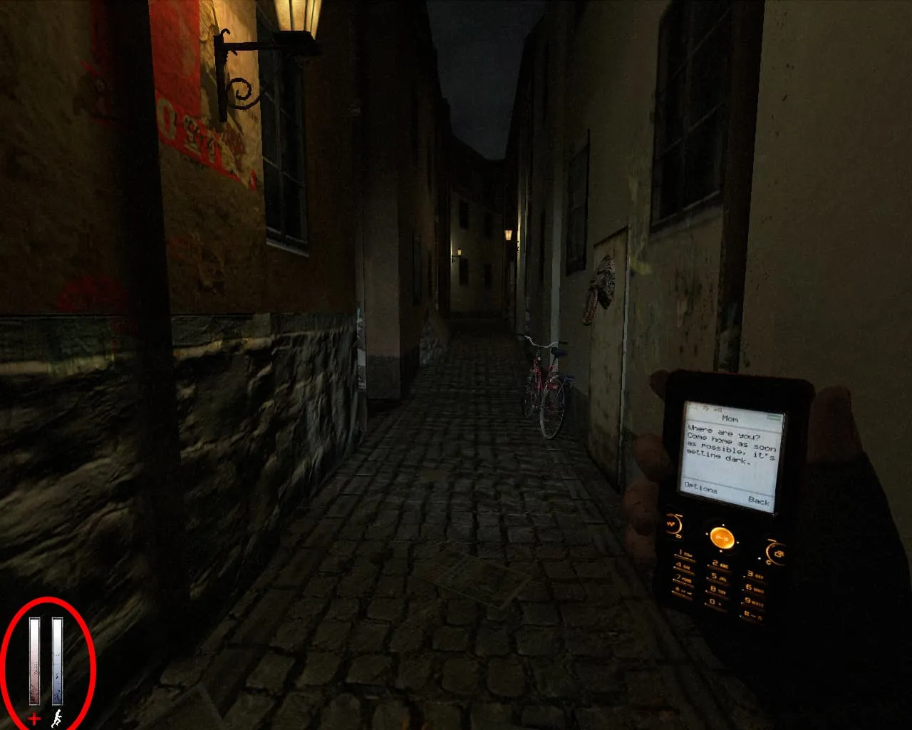
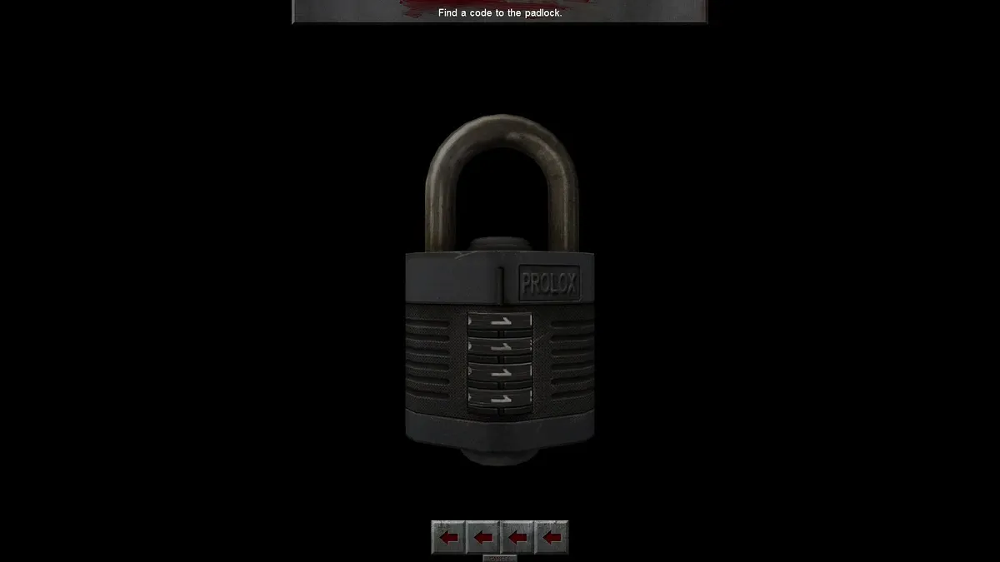
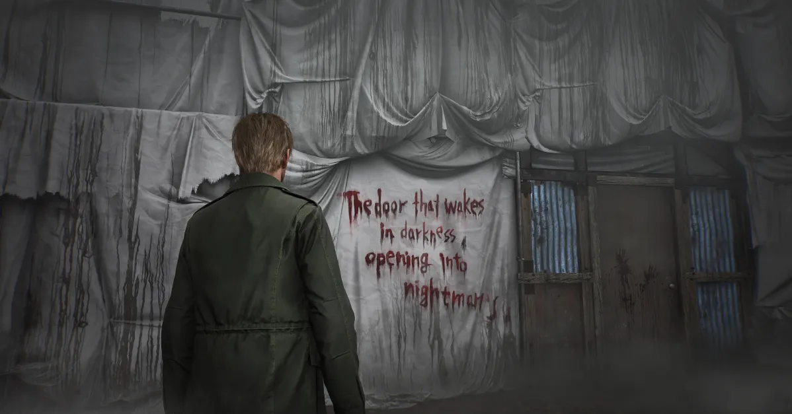
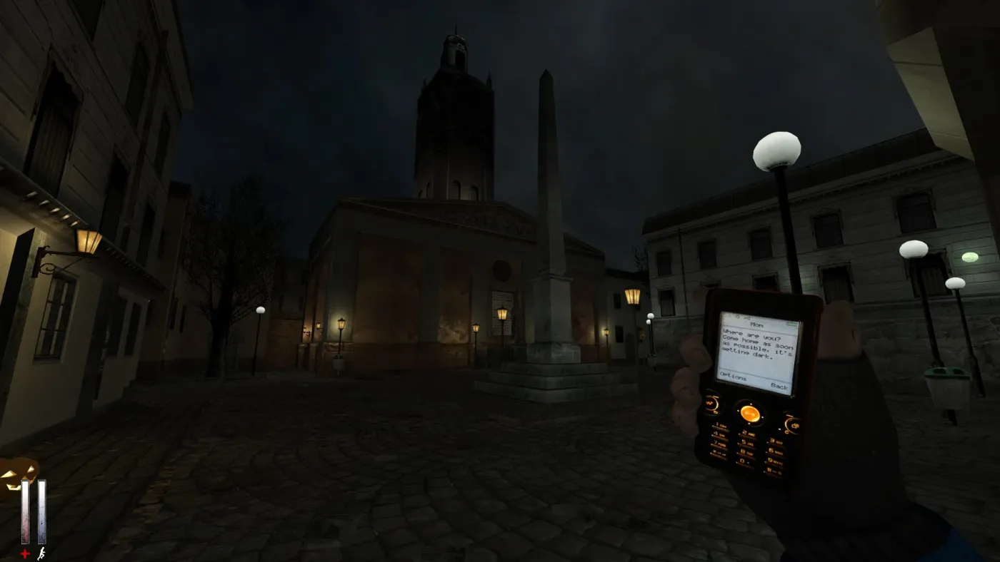
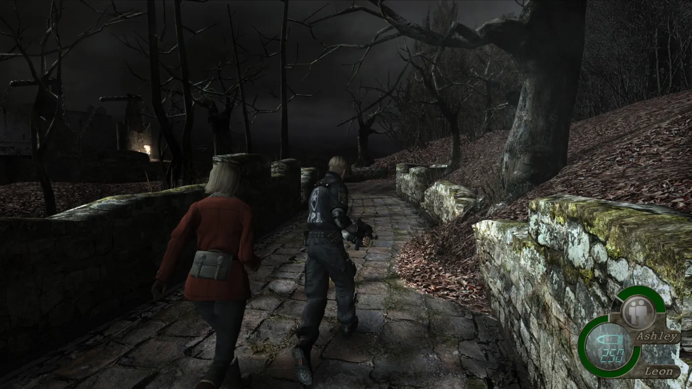

Cry of Fear
How a free, small-team horror mod uses story, scarcity and sound to put the player inside one young man's breaking mind.
- Developer
- Team Psykskallar
- Released
- 2012
- Genre
- Psychological survival horror
- Built on
- Half-Life (standalone mod)
- Price
- Free on Steam
Overview
Official trailer from Team Psykskallar.
Cry of Fear is a psychological survival horror game released in 2012 as a standalone mod for Half-Life. Made by the small indie team Team Psykskallar, it pairs classic horror with modern narrative techniques, and it's known for its haunting atmosphere, emotional story and smart use of limited resources. It's also completely free to play. The game uses narrative, mechanics and atmosphere together to immerse players in dread and psychological tension.
Setting
The game is set in a desolate, unnamed Scandinavian city, where the protagonist, Simon Henriksson, moves through dark, decaying streets. It shifts between the real world and Simon's distorted perception, blending reality with nightmarish, surreal elements: abandoned streets, hospitals, basements and twisted versions of familiar places. Minimal lighting and eerie sound keep the tension constant, and the city itself becomes a reflection of Simon's trauma, guilt and mental deterioration.
Narrative Analysis
Storyline
Simon wakes up in a distorted city, where he faces terrifying monsters and bizarre visions. As the story unfolds, he uncovers memories of a troubled childhood and strained relationships, particularly with his mother. The central mystery is whether Simon can escape the horrors of both the city and his own mind. Sara, a mysterious woman, plays a key role in his emotional journey, though her true purpose is only revealed as the story progresses.
Themes
Trauma & mental health
The game follows Simon's psychological breakdown, showing how trauma can distort perception and shape reality.
Guilt & redemption
Simon grapples with guilt over his past and looks for redemption, though the outcome stays ambiguous.
Isolation
Cut off physically and emotionally, Simon's surroundings mirror his inner loneliness and disarray.
Reality vs. illusion
The blurred line between real and imagined reflects Simon's state of mind and keeps the player questioning what's real.
Symbolism
- Monsters
- Simon's inner demons: guilt, fear and unresolved trauma.
- The city
- His fractured mind, full of decay and confusion.
- Sara
- First a symbol of comfort, later of unresolved guilt and emotional pain.
- Mirrors
- Self-reflection, and how hard it is for Simon to face his own truth.
- The knife
- His self-destructive tendencies and emotional turmoil.
Together, the narrative, themes and symbolism turn the game into an exploration of mental health, trauma and self-acceptance, inviting players into the protagonist's mind and the darkest parts of human psychology.
Gameplay Mechanics
Survival horror
Limited resources. Scarce ammunition, healing syringes and a small inventory create constant worry about carrying the wrong things. Scarcity forces you to plan every fight.
Exploration. Levels demand a thorough search of dark corridors, abandoned buildings and outdoor spaces. Clues are scattered as notes, visual hints and locked doors ("This door requires a code"), so exploring is essential to solving puzzles and finding hidden items.

Combat
Weaponry. Weapons range from knives and hammers to pistols and shotguns. Some can be dual-wielded with the phone light in the other hand, trading accuracy for the ability to see.

Enemies. Grotesque, zombie-like manifestations tied to Simon's mental state. Their erratic movement made every encounter terrifying, and each one forces a choice: fight and burn resources, or run.

Core mechanics
Phone torch. The map is shrouded in darkness, and the phone light only reaches so far, leaving most of the world in shadow and feeding the fear of the unknown.
Stamina. Running drains stamina, which is slow to recover. When it's low, Simon slows down and becomes easier to catch, so every sprint is a decision.

Sanity. As Simon deteriorates, the game shows it through disorienting visuals, eerie sounds and sudden changes to the environment. Rooms can look different when you come back, and subtle hallucinations keep you on edge.
Puzzles
Progress often means deciphering cryptic notes, finding keys or working out how to open a door. The puzzles test observation and logic, adding a thinking layer between the scares.

What makes it unique
The mobile phone
Flashlight, map and communication device in one. Unexpected texts and calls add to the dread.
Co-op mode
Up to four players can team up for unique challenges while keeping the horror tone. I haven't tried it yet, but I'd like to.
Replayability
Choices in how you treat NPCs and approach combat change the outcome, with multiple endings to uncover.
Atmosphere & Aesthetics
Atmosphere is what makes Cry of Fear work. Eerie visuals, haunting sound and emotional depth combine into a world that's as unsettling as it is compelling.
Visual design
A low-resolution look reminiscent of early-2000s games makes the horror more ambiguous. Dark lighting and desaturated tones dominate, visual glitches mirror Simon's mind, and the limited light amplifies fear of what you can't see.
Emotional tone
Environments and enemy designs reflect themes of loneliness and trauma. Jump scares are used sparingly; instead, an oppressive atmosphere keeps you feeling vulnerable the whole time.
Sound design
Ambient audio builds an unpredictable soundscape, from distant whispers to dissonant drones. Sudden musical cues and deliberate silence heighten tension, while echoing footsteps and muffled crying add layers of dread.
Turn your sound on for this clip.
Influences & style
Drawing from Silent Hill and Resident Evil, the game blends psychological horror with resource-driven survival. Its urban setting and first-person perspective help it stand apart.



Conclusion
Cry of Fear offers a unique take on psychological horror by blending survival mechanics with a deeply unsettling narrative. Its eerie visuals and haunting soundtrack pull you into a nightmarish world where reality and delusion blur. Limited resources and psychological manipulation don't just challenge you; they draw you into Simon's struggle with his own mind. The story can be cryptic, but that ambiguity adds depth and leaves you with more questions than answers.
It may not be for everyone, but for those willing to dive into its dark, disturbing world, it's a game that lingers long after the screen goes dark.
Research & Sources
YouTube reviews
I watched these reviews to get other perspectives and catch anything I might have missed in my own playthroughs.


Trailer and game imagery courtesy of Team Psykskallar. Review videos by Pyrocynical and Markiplier. Comparison images from Silent Hill 2 (Konami) and Resident Evil 4 (Capcom).